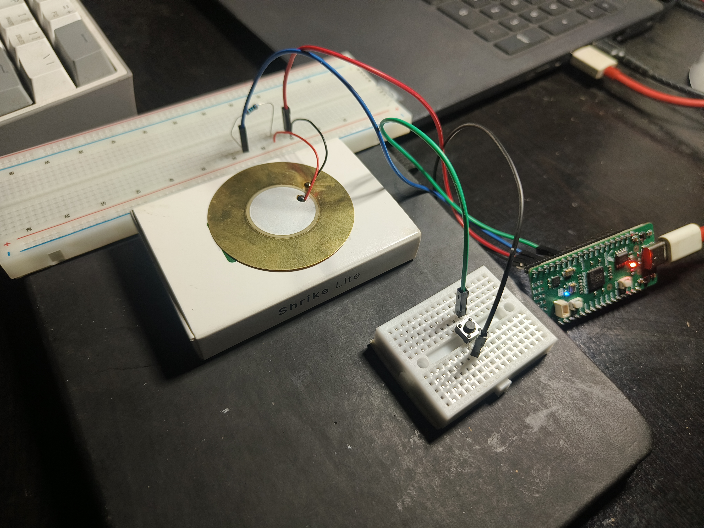
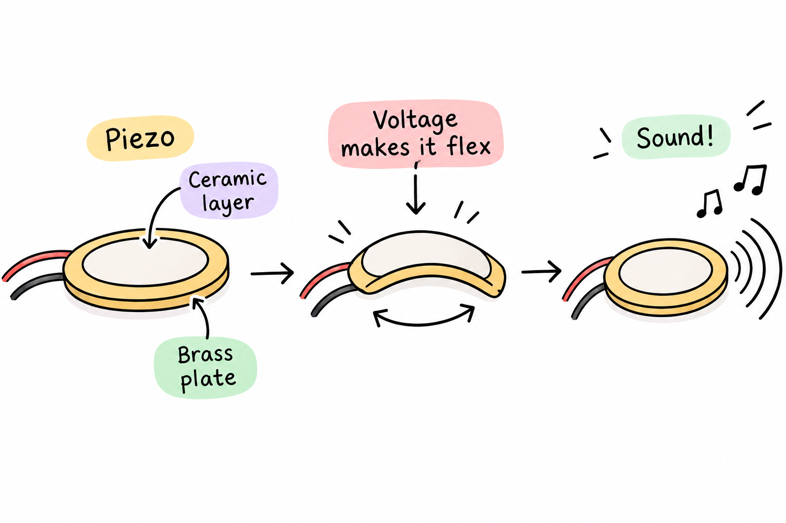
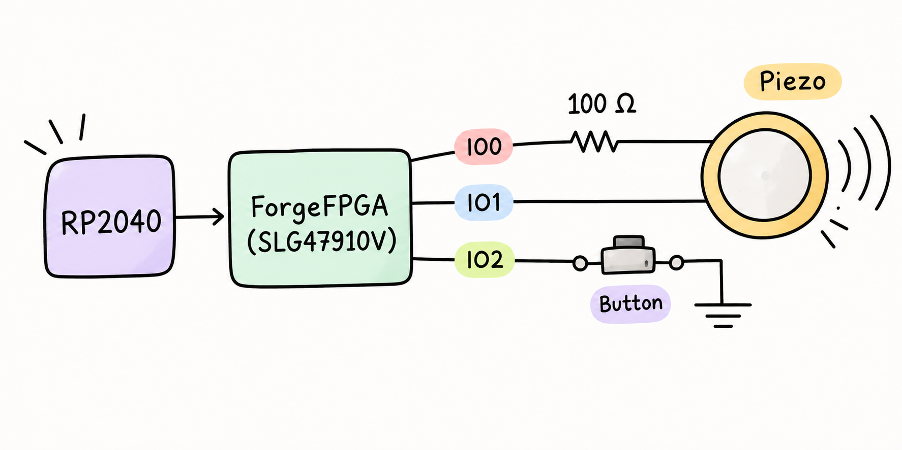
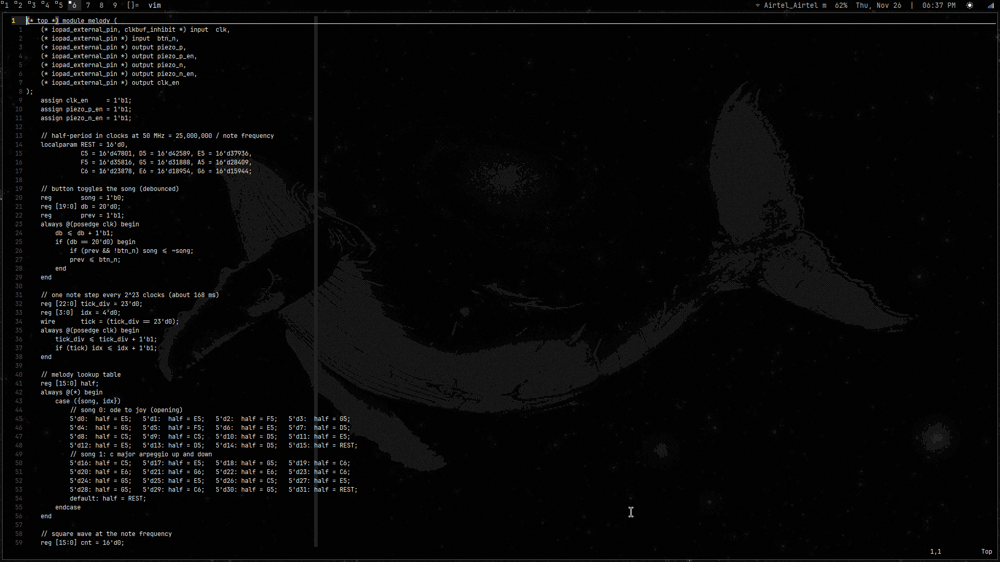
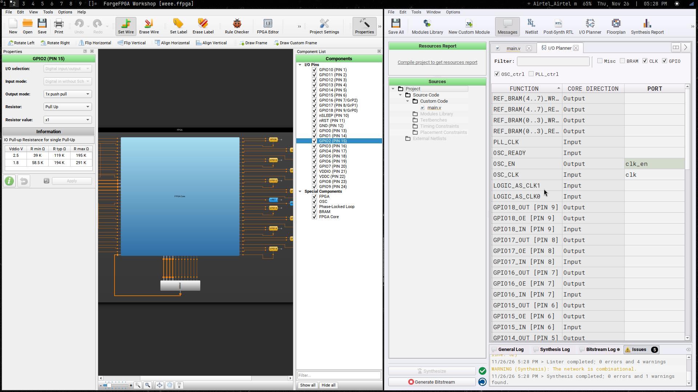

the shrike lite playing a tune, piezo on its box
in the last post i wrote firmware for the rp2040 with nothing but a compiler and the datasheet. this time there is no cpu at all. the board has a second chip, an fpga, and i wanted to see how much music i could get out of it using only counters and a lookup table.
the result is a music box. it plays a 16-note tune, each note fades out like a plucked string, and a button switches songs. the whole design is about 85 lines of verilog.
the Vicharak Shrike Lite has two chips: the RP2040 and a Renesas ForgeFPGA (SLG47910V, 1120 LUTs). the
FPGA has no flash of its own. the RP2040 stores the bitstream and loads it into the FPGA at runtime,
using shrike.flash() from the shrike micropython build.
so the cpu only configures the FPGA. after that, the sound comes from logic alone.

a piezo disc: voltage bends the ceramic, the brass flexes, air moves
the speaker is a 50 mm piezo disc, a ceramic layer glued to a brass plate. a voltage across the ceramic makes it change size sideways, the brass doesn't, so the disc bends. flip the voltage back and forth and the disc flexes, pushing air.
it is loud near its resonance, a few kHz, and weak at low frequencies. so all notes stay between about 520 Hz and 1.6 kHz.
i drive it with two pins, one outputting the signal and the other its inverse. the disc sees twice the voltage swing, so it is louder.

the wiring — rp2040 loads the fpga, three gpio pins do the rest
| part | goes to |
|---|---|
| piezo red, through a 100 Ω resistor | FPGA_IO0 |
| piezo black | FPGA_IO1 |
| button, one leg | FPGA_IO2 |
| button, other leg | GND |
IO2 has its internal pull-up enabled in the pin settings, so the pin reads high until the button pulls it to ground.
the FPGA gets a 50 MHz clock from its internal oscillator. to make a square wave at frequency f, i flip the output every half period, and the half period in clocks is:
half = 25,000,000 / ffor E5 (659 Hz) that is 37,936 clocks. a counter counts up to that number, flips the output, and starts again.
if (cnt >= half) begin
cnt <= 0;
sq <= ~sq;
end else
cnt <= cnt + 1'b1;that is the whole oscillator. a different note is a different number.
a second counter ticks once every 2^23 clocks, about 168 ms, and steps an index from 0 to 15. a
case statement turns the index into a note:
case ({song, idx})
5'd0: half = E5;
5'd1: half = E5;
5'd2: half = F5;
...
endcasethe song bit is the button state, so there are two songs of 16 notes each: the opening of ode to joy, and a c major arpeggio up and down. a half-period of 0 means a rest.

the case statement in vim — each note is a half-period count
a plain square wave at constant volume sounds like a doorbell. to make it sound like a struck string, every note starts at full volume and fades.
env is an 8-bit counter that jumps to 255 when a note starts and counts down by one every
2^15 clocks, so it reaches zero at about the end of the note. a second, very fast 8-bit counter,
pwm, counts continuously at 195 kHz, far above hearing. the tone only passes while
pwm < env:
wire active = (half != 0) && (pwm < env);
assign piezo_p = active & sq;
assign piezo_n = active & ~sq;when env is high the tone is on most of the time. as it falls, the on-time shrinks and the
note gets quieter. when active is low, both pins are 0, so the piezo sees no voltage.
a 20-bit counter samples the button about every 20 ms, which is the debounce. a high to low change toggles the song bit.
the tools are made for windows and ubuntu, and i'm on arch, so:
yay -S go-configure-sw-hub
/opt/go-configure-sw-hub/bin/GPLauncher
go configure — pin settings on the left, i/o planner on the right
in go configure i set GPIO0 and GPIO1 as push-pull outputs, GPIO2 with a pull-up, and mapped the ports in the i/o planner. every output needs an output-enable signal tied high, and the oscillator needs its own enable.
then the bitstream goes to the board through the RP2040:
mpremote cp FPGA_bitstream_MCU.bin :
mpremote exec "import shrike; shrike.flash('FPGA_bitstream_MCU.bin')"the first project sounded bad. i started with a shepard tone, the sound that seems to rise forever. it needs sweeps up to 6 kHz at constant volume, and a 1-bit square wave on a piezo was harsh. i switched to this melody box, which stays in the piezo's strong range and fades each note.
old package database. yay failed with 404s on graphviz because my package
database was out of date. sudo pacman -Syu fixed it.
the board was stuck as RP2 Boot. it showed up as a bootloader device with no serial
port. the RPI-RP2 drive never mounted, so i used picotool to load the shrike
micropython uf2 instead.
the missing serial port. after the uf2 loaded, /dev/ttyACM0 still didn't
appear. the pacman -Syu had updated the kernel, so cdc_acm for the running
kernel was missing. a reboot fixed it.
the wrong .bin. go configure writes several files. the shrike docs say only
FPGA_bitstream_MCU.bin programs the FPGA, and i first tried
FPGA_bitstream.bin.